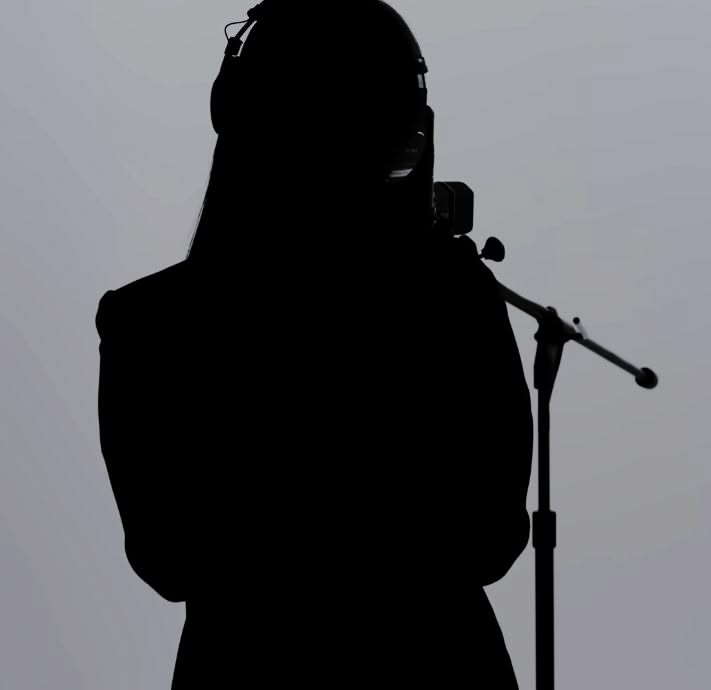
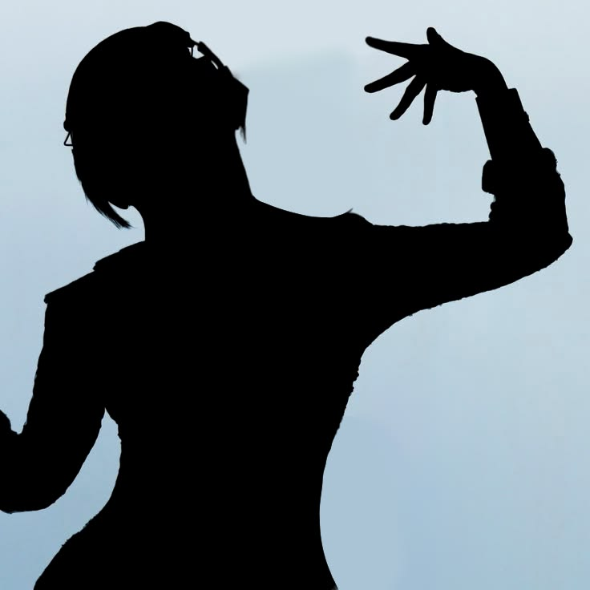
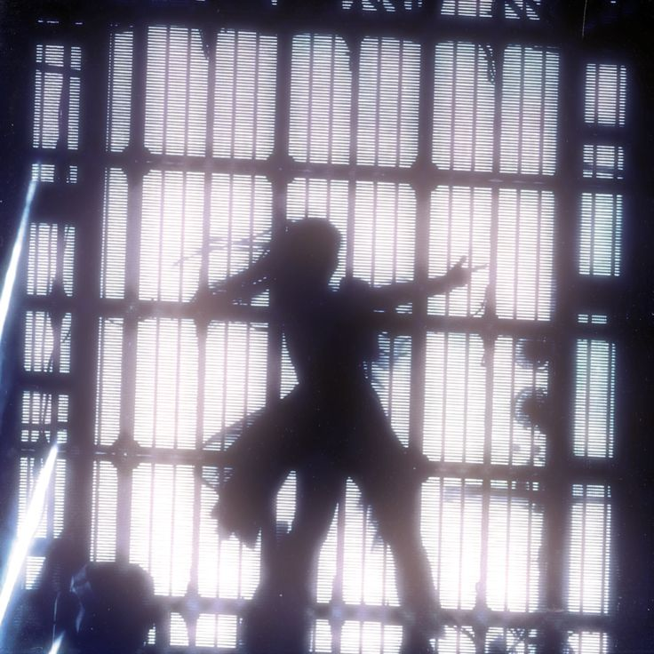

💠La Sombra que Canta💠 |
|---|
El Misterio de la Identidad: El Poder del Anonimato
A diferencia de las estrellas de pop convencionales, Ado ha construido su carrera sobre una base de misterio absoluto. Desde su debut, ha tomado la decisión consciente de no revelar su rostro al público, utilizando avatares ilustrados y una estética de "artista virtual" para representarse.

¿Por qué el anonimato?
Esta elección no es solo por timidez, sino una declaración artística. Al ocultar su identidad física, Ado logra que el espectador se enfoque en lo que realmente importa: su capacidad vocal y el mensaje de sus letras. Ella ha mencionado que desea ser reconocida por su arte y no por su apariencia, permitiendo que sus canciones cobren vida propia sin los prejuicios que conlleva una imagen pública real.

Presencia en los escenarios:
Incluso en sus conciertos en vivo, Ado mantiene este aura de misterio. Suele presentarse dentro de una "Birdcage" (jaula de cristal) con iluminación estratégica que solo permite ver su silueta, o utiliza pantallas y juegos de luces que preservan su privacidad. Esta distancia crea una conexión única con sus fans, donde la música es el único puente entre la artista y su audiencia.
